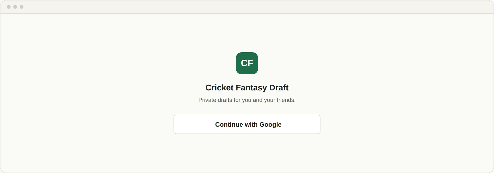
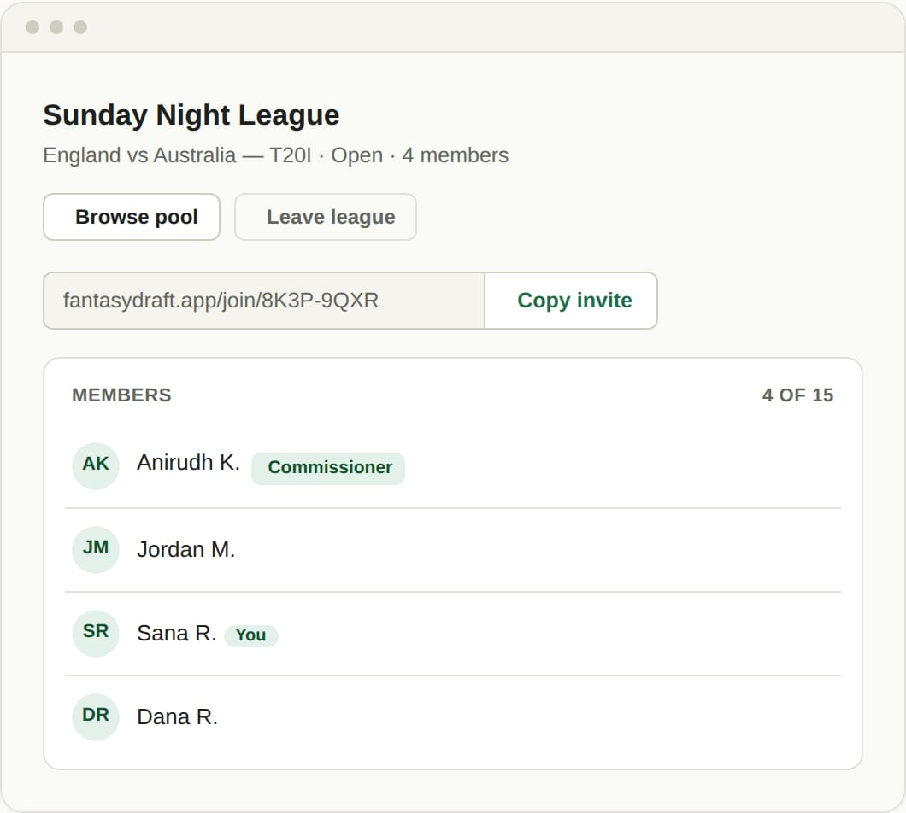
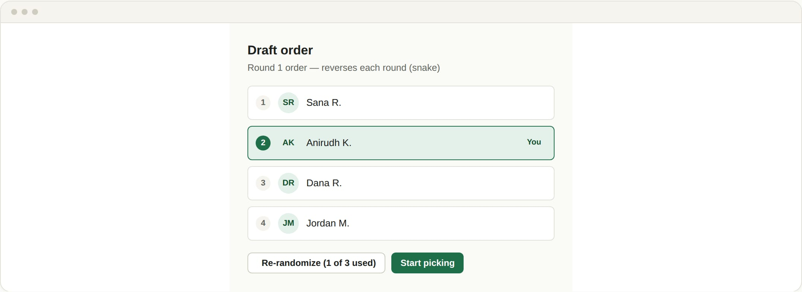
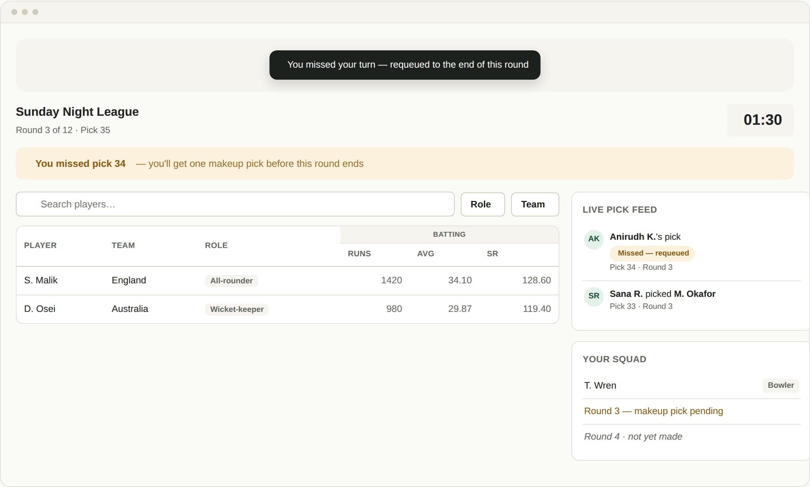
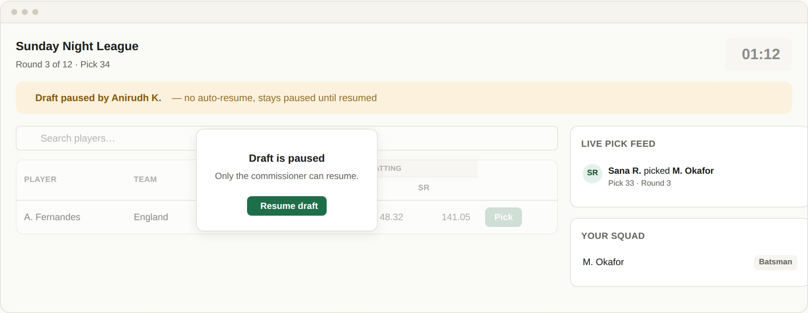
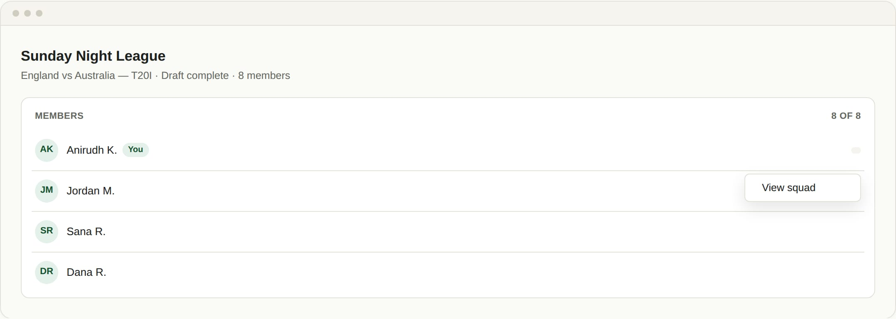
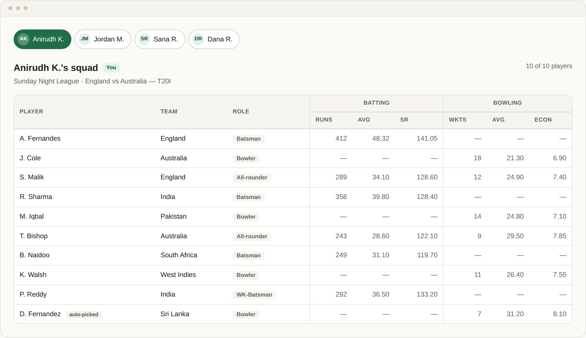
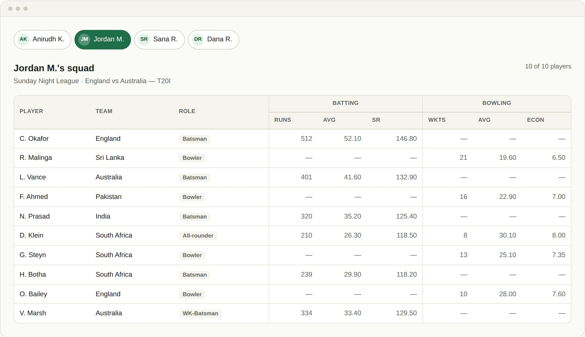

Setting the stage
From sign-in to a locked lobby with a revealed draft order — everything that happens before the clock starts.

Sign in
One click with Google — no passwords, no email infra.

Lobby fills up
Friends join live by link — the Commissioner locks it whenever ready.

Order reveal
Draft order shuffles live, with up to three re-randomizes.
Draft night
The live draft room — the highest-stakes surface in the app, built to keep moving no matter what.

On the clock
Searchable player pool, live countdown, one-tap pick — no undos.

Miss a turn
Requeued to the end of the round — one no-penalty makeup shot.

Connection drops
Commissioner pauses anytime — resumes whenever everyone's back.
After the whistle — and behind the scenes
Final squads, locked in — every league's permanent record for the season.

League, wrapped
Every roster full — the league's home screen once the season's squads are locked in.

Your squad
A permanent, bragging-rights record with a full stat line.

Everyone's squad
Every roster is visible once the draft wraps.